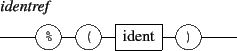

A message based variable is a variable containing an OSC message which will be evaluated at the time of the event. They are supported by all kind of events. Like the variables above, a message based variable starts with a '$' sign followed by a valid 'get' message enclosed in parenthesis:

The evaluation of a 'get' message produces a message or a list of messages. The message based variable will be replaced by the parameters of the messages resulting from the evaluation of the 'get' message. Note that all the 'get' messages attached to an event are evaluated at the same time.
Example:
|
/ITL/s/o1 watch 'mouseDown' '/ITL/s/o1' 'show' $('/ITL/s/o2' get 'show');
/ITL/s/o1 watch+ 'mouseDown' '/ITL/s/o2' 'show' $('/ITL/s/o1' get 'show'); /ITL/s/o2 watch 'mouseDown' '/ITL/s/o1' 'show' $('/ITL/s/o2' get 'show'); /ITL/s/o2 watch+ 'mouseDown' '/ITL/s/o2' 'show' $('/ITL/s/o1' get 'show') |